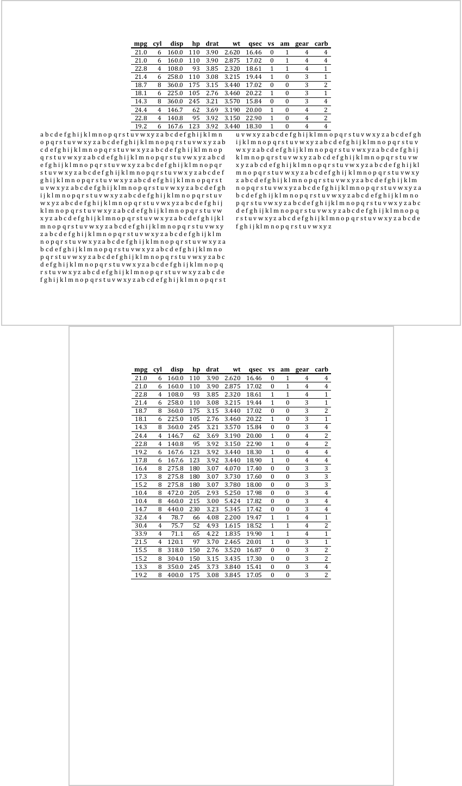

| prop_section {officer} | R Documentation |
A section is a grouping of blocks (ie. paragraphs and tables) that have a set of properties that define pages on which the text will appear.
A Section properties object stores information about page composition, such as page size, page orientation, borders and margins.
prop_section( page_size = NULL, page_margins = NULL, type = NULL, section_columns = NULL )
page_size |
page dimensions, an object generated with function page_size. |
page_margins |
page margins, an object generated with function page_mar. |
type |
Section type. It defines how the contents of the section will be placed relative to the previous section. Available types are "continuous" (begins the section on the next paragraph), "evenPage" (begins on the next even-numbered page), "nextColumn" (begins on the next column on the page), "nextPage" (begins on the following page), "oddPage" (begins on the next odd-numbered page). |
section_columns |
section columns, an object generated with function section_columns. |

There is no support yet for header and footer contents definition.
Other functions for section definition:
page_mar(),
page_size(),
section_columns()
library(officer)
landscape_one_column <- block_section(
prop_section(
page_size = page_size(orient = "landscape"), type = "continuous"
)
)
landscape_two_columns <- block_section(
prop_section(
page_size = page_size(orient = "landscape"), type = "continuous",
section_columns = section_columns(widths = c(4.75, 4.75))
)
)
doc_1 <- read_docx()
# there starts section with landscape_one_column
doc_1 <- body_add_table(doc_1, value = mtcars[1:10,], style = "table_template")
doc_1 <- body_end_block_section(doc_1, value = landscape_one_column)
# there stops section with landscape_one_column
# there starts section with landscape_two_columns
doc_1 <- body_add_par(doc_1, value = paste(rep(letters, 50), collapse = " "))
doc_1 <- body_end_block_section(doc_1, value = landscape_two_columns)
# there stops section with landscape_two_columns
doc_1 <- body_add_table(doc_1, value = mtcars[1:25,], style = "table_template")
print(doc_1, target = tempfile(fileext = ".docx"))